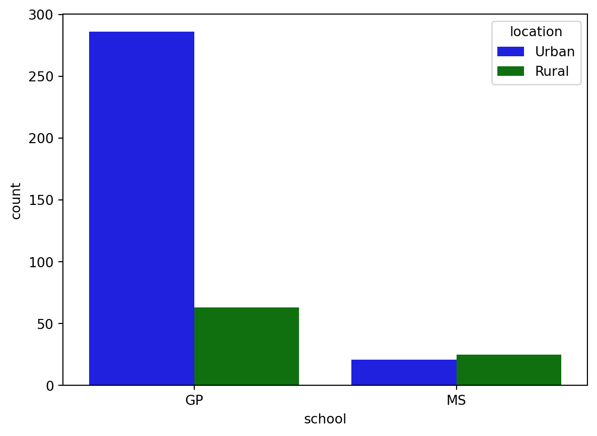
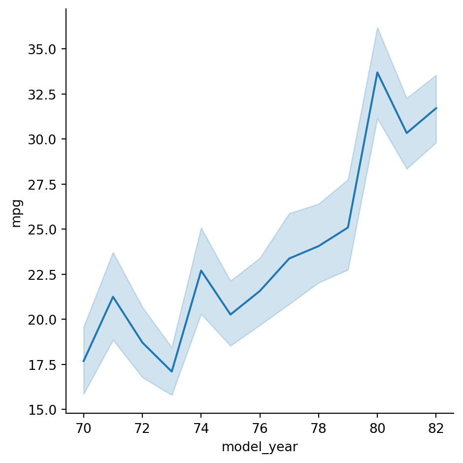
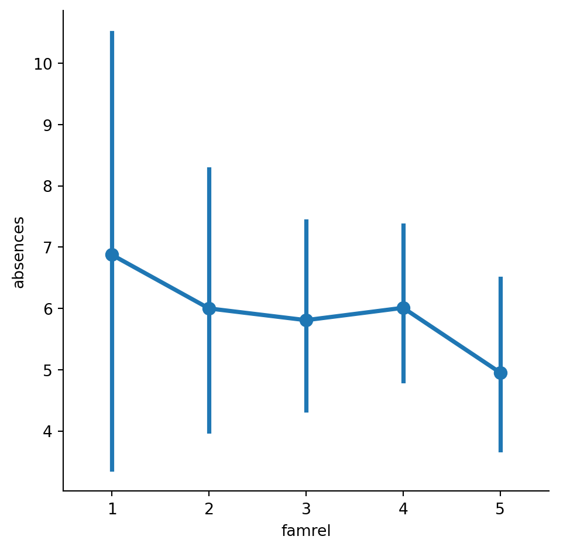

# Importing the course packages
import pandas as pd
import numpy as np
import matplotlib.pyplot as plt
import seaborn as sns
# Importing the course datasets
country_data = pd.read_csv('datasets/countries-of-the-world.csv', decimal=",")
mpg = pd.read_csv('datasets/mpg.csv')
student_data = pd.read_csv('datasets/student-alcohol-consumption.csv', index_col=0)
survey = pd.read_csv('datasets/young-people-survey-responses.csv', index_col=0)Introduction to Data Visualization with Seaborn
survey.columnsIndex(['Music', 'Techno', 'Movies', 'History', 'Mathematics', 'Pets',
'Spiders', 'Loneliness', 'Parents Advice', 'Internet usage', 'Finances',
'Age', 'Siblings', 'Gender', 'Village - town'],
dtype='object')import pandas as pd
import numpy as np
df = pd.read_csv("datasets/young-people-survey-responses.csv")
student_data = pd.read_csv("datasets/student-alcohol-consumption.csv")
mpg = pd.read_csv("datasets/mpg.csv")
survey_data = pd.read_csv("datasets/young-people-survey-responses.csv")survey_data["Age Category"] = np.where(survey_data["Age"] > 21, '21+', 'Less than 21')survey_data["Interested in Math"]=np.where(survey_data.Mathematics>=3, True,False)# Assuming survey_data is your DataFrame
#survey_data.rename(columns={"Parents' Advice": 'Parents Advice'}, inplace=True)Explore Datasets
Use the DataFrames imported in the first cell to explore the data and practice your skills! - From country_data, create a scatter plot to look at the relationship between GDP and Literacy. Use color to segment the data points by region. - Use mpg to create a line plot with model_year on the x-axis and weight on the y-axis. Create differentiating lines for each country of origin (origin). - Create a box plot from student_data to explore the relationship between the number of failures (failures) and the average final grade (G3). - Create a bar plot from survey to compare how Loneliness differs across values for Internet usage. Format it to have two subplots for gender. - Make sure to add titles and labels to your plots and adjust their format for readability!
Making a scatter plot with lists
In this exercise, we’ll use a dataset that contains information about 227 countries. This dataset has lots of interesting information on each country, such as the country’s birth rates, death rates, and its gross domestic product (GDP). GDP is the value of all the goods and services produced in a year, expressed as dollars per person.
We’ve created three lists of data from this dataset to get you started. gdp is a list that contains the value of GDP per country, expressed as dollars per person. phones is a list of the number of mobile phones per 1,000 people in that country. Finally, percent_literate is a list that contains the percent of each country’s population that can read and write.
Instructions
- Import Matplotlib and Seaborn using the standard naming convention.
- Use Seaborn to create a count plot with region on the y-axis.
- Display the plot.
region=['ASIA (EX. NEAR EAST)', 'EASTERN EUROPE', 'NORTHERN AFRICA', 'OCEANIA', 'WESTERN EUROPE', 'SUB-SAHARAN AFRICA', 'LATIN AMER. & CARIB', 'LATIN AMER. & CARIB', 'LATIN AMER. & CARIB', 'C.W. OF IND. STATES', 'LATIN AMER. & CARIB', 'OCEANIA',
'WESTERN EUROPE', 'C.W. OF IND. STATES', 'LATIN AMER. & CARIB', 'NEAR EAST', 'ASIA (EX. NEAR EAST)', 'LATIN AMER. & CARIB',
'C.W. OF IND. STATES', 'WESTERN EUROPE', 'LATIN AMER. & CARIB', 'SUB-SAHARAN AFRICA', 'NORTHERN AMERICA', 'ASIA (EX. NEAR EAST)', 'LATIN AMER. & CARIB', 'EASTERN EUROPE', 'SUB-SAHARAN AFRICA', 'LATIN AMER. & CARIB',
'LATIN AMER. & CARIB', 'ASIA (EX. NEAR EAST)', 'EASTERN EUROPE', 'SUB-SAHARAN AFRICA', 'ASIA (EX. NEAR EAST)', 'SUB-SAHARAN AFRICA', 'ASIA (EX. NEAR EAST)', 'SUB-SAHARAN AFRICA', 'NORTHERN AMERICA', 'SUB-SAHARAN AFRICA', 'LATIN AMER. & CARIB', 'SUB-SAHARAN AFRICA', 'SUB-SAHARAN AFRICA', 'LATIN AMER. & CARIB', 'ASIA (EX. NEAR EAST)', 'LATIN AMER. & CARIB', 'SUB-SAHARAN AFRICA', 'SUB-SAHARAN AFRICA', 'SUB-SAHARAN AFRICA', 'OCEANIA', 'LATIN AMER. & CARIB', 'SUB-SAHARAN AFRICA', 'EASTERN EUROPE', 'LATIN AMER. & CARIB', 'NEAR EAST', 'EASTERN EUROPE', 'WESTERN EUROPE', 'SUB-SAHARAN AFRICA', 'LATIN AMER. & CARIB', 'LATIN AMER. & CARIB', 'ASIA (EX. NEAR EAST)', 'LATIN AMER. & CARIB', 'NORTHERN AFRICA', 'LATIN AMER. & CARIB', 'SUB-SAHARAN AFRICA', 'SUB-SAHARAN AFRICA', 'BALTICS', 'SUB-SAHARAN AFRICA', 'WESTERN EUROPE', 'OCEANIA', 'WESTERN EUROPE', 'WESTERN EUROPE', 'LATIN AMER. & CARIB', 'OCEANIA',
'SUB-SAHARAN AFRICA', 'SUB-SAHARAN AFRICA', 'NEAR EAST', 'C.W. OF IND. STATES', 'WESTERN EUROPE',
'SUB-SAHARAN AFRICA', 'WESTERN EUROPE', 'WESTERN EUROPE',
'NORTHERN AMERICA', 'LATIN AMER. & CARIB', 'LATIN AMER. & CARIB',
'OCEANIA', 'LATIN AMER. & CARIB', 'WESTERN EUROPE',
'SUB-SAHARAN AFRICA', 'SUB-SAHARAN AFRICA', 'LATIN AMER. & CARIB',
'LATIN AMER. & CARIB', 'LATIN AMER. & CARIB', 'ASIA (EX. NEAR EAST)',
'EASTERN EUROPE', 'WESTERN EUROPE', 'ASIA (EX. NEAR EAST)',
'ASIA (EX. NEAR EAST)', 'ASIA (EX. NEAR EAST)', 'NEAR EAST', 'WESTERN EUROPE',
'WESTERN EUROPE', 'NEAR EAST', 'WESTERN EUROPE', 'LATIN AMER. & CARIB',
'ASIA (EX. NEAR EAST)', 'WESTERN EUROPE', 'NEAR EAST', 'C.W. OF IND. STATES', 'SUB-SAHARAN AFRICA',
'OCEANIA', 'ASIA (EX. NEAR EAST)', 'ASIA (EX. NEAR EAST)', 'NEAR EAST', 'C.W. OF IND. STATES',
'ASIA (EX. NEAR EAST)', 'BALTICS', 'NEAR EAST', 'SUB-SAHARAN AFRICA', 'SUB-SAHARAN AFRICA', 'NORTHERN AFRICA',
'WESTERN EUROPE', 'BALTICS', 'WESTERN EUROPE', 'ASIA (EX. NEAR EAST)', 'EASTERN EUROPE', 'SUB-SAHARAN AFRICA', 'SUB-SAHARAN AFRICA', 'ASIA (EX. NEAR EAST)', 'ASIA (EX. NEAR EAST)', 'SUB-SAHARAN AFRICA', 'WESTERN EUROPE', 'OCEANIA', 'LATIN AMER. & CARIB',
'SUB-SAHARAN AFRICA', 'SUB-SAHARAN AFRICA', 'SUB-SAHARAN AFRICA', 'LATIN AMER. & CARIB', 'OCEANIA', 'C.W. OF IND. STATES',
'WESTERN EUROPE', 'ASIA (EX. NEAR EAST)', 'LATIN AMER. & CARIB', 'NORTHERN AFRICA', 'SUB-SAHARAN AFRICA', 'SUB-SAHARAN AFRICA', 'OCEANIA', 'ASIA (EX. NEAR EAST)', 'WESTERN EUROPE', 'LATIN AMER. & CARIB', 'OCEANIA',
'OCEANIA', 'LATIN AMER. & CARIB', 'SUB-SAHARAN AFRICA', 'SUB-SAHARAN AFRICA', 'OCEANIA', 'WESTERN EUROPE', 'NEAR EAST',
'ASIA (EX. NEAR EAST)',
'OCEANIA',
'LATIN AMER. & CARIB',
'OCEANIA',
'LATIN AMER. & CARIB',
'LATIN AMER. & CARIB',
'ASIA (EX. NEAR EAST)',
'EASTERN EUROPE',
'WESTERN EUROPE',
'LATIN AMER. & CARIB',
'NEAR EAST',
'SUB-SAHARAN AFRICA',
'EASTERN EUROPE',
'C.W. OF IND. STATES',
'SUB-SAHARAN AFRICA',
'SUB-SAHARAN AFRICA',
'LATIN AMER. & CARIB',
'LATIN AMER. & CARIB',
'NORTHERN AMERICA',
'LATIN AMER. & CARIB',
'OCEANIA',
'WESTERN EUROPE',
'SUB-SAHARAN AFRICA',
'NEAR EAST',
'SUB-SAHARAN AFRICA',
'EASTERN EUROPE',
'SUB-SAHARAN AFRICA',
'SUB-SAHARAN AFRICA',
'ASIA (EX. NEAR EAST)',
'EASTERN EUROPE',
'EASTERN EUROPE',
'OCEANIA',
'SUB-SAHARAN AFRICA',
'SUB-SAHARAN AFRICA',
'WESTERN EUROPE',
'ASIA (EX. NEAR EAST)',
'SUB-SAHARAN AFRICA',
'LATIN AMER. & CARIB',
'SUB-SAHARAN AFRICA',
'WESTERN EUROPE',
'WESTERN EUROPE',
'NEAR EAST',
'ASIA (EX. NEAR EAST)',
'C.W. OF IND. STATES',
'SUB-SAHARAN AFRICA',
'ASIA (EX. NEAR EAST)',
'SUB-SAHARAN AFRICA',
'OCEANIA',
'LATIN AMER. & CARIB',
'NORTHERN AFRICA',
'NEAR EAST',
'C.W. OF IND. STATES',
'LATIN AMER. & CARIB',
'OCEANIA',
'SUB-SAHARAN AFRICA',
'C.W. OF IND. STATES',
'NEAR EAST',
'WESTERN EUROPE',
'NORTHERN AMERICA',
'LATIN AMER. & CARIB',
'C.W. OF IND. STATES',
'OCEANIA',
'LATIN AMER. & CARIB',
'ASIA (EX. NEAR EAST)',
'LATIN AMER. & CARIB',
'OCEANIA',
'NEAR EAST',
'NORTHERN AFRICA',
'NEAR EAST',
'SUB-SAHARAN AFRICA',
'SUB-SAHARAN AFRICA']# Import Matplotlib and Seaborn
import seaborn as sns
import matplotlib.pyplot as plt
# Create count plot with region on the y-axis
sns.countplot(y=region)
# Show plot
plt.show()“Tidy” vs. “untidy” data
Here, we have a sample dataset from a survey of children about their favorite animals. But can we use this dataset as-is with Seaborn? Let’s use pandas to import the csv file with the data collected from the survey and determine whether it is tidy, which is essential to having it work well with Seaborn. ### Instructions - Read the csv file located at csv_filepath into a DataFrame named df. - Print the head of df to show the first five rows.
# Import pandas
import pandas as pd
# Create a DataFrame from csv file
df = pd.read_csv("datasets/young-people-survey-responses.csv")
# Print the head of df
print(df.head()) Unnamed: 0 Music Techno Movies History Mathematics Pets Spiders \
0 0 5.0 1.0 5.0 1.0 3.0 4.0 1.0
1 1 4.0 1.0 5.0 1.0 5.0 5.0 1.0
2 2 5.0 1.0 5.0 1.0 5.0 5.0 1.0
3 3 5.0 2.0 5.0 4.0 4.0 1.0 5.0
4 4 5.0 2.0 5.0 3.0 2.0 1.0 1.0
Loneliness Parents Advice Internet usage Finances Age Siblings \
0 3.0 4.0 few hours a day 3.0 20.0 1.0
1 2.0 2.0 few hours a day 3.0 19.0 2.0
2 5.0 3.0 few hours a day 2.0 20.0 2.0
3 5.0 2.0 most of the day 2.0 22.0 1.0
4 3.0 3.0 few hours a day 4.0 20.0 1.0
Gender Village - town
0 female village
1 female city
2 female city
3 female city
4 female village Making a count plot with a DataFrame
In this exercise, we’ll look at the responses to a survey sent out to young people. Our primary question here is: how many young people surveyed report being scared of spiders? Survey participants were asked to agree or disagree with the statement “I am afraid of spiders”. Responses vary from 1 to 5, where 1 is “Strongly disagree” and 5 is “Strongly agree”. ### Instructions - Import Matplotlib, pandas, and Seaborn using the standard names. - Create a DataFrame named df from the csv file located at csv_filepath. - Use the countplot() function with the x= and data= arguments to create a count plot with the “Spiders” column values on the x-axis. - Display the plot.
# Import Matplotlib, pandas, and Seaborn
import matplotlib.pyplot as plt
import seaborn as sns
import pandas as pd
csv_filepath = "datasets/young-people-survey-responses.csv"
# Create a DataFrame from csv file
df = pd.read_csv(csv_filepath)
# Create a count plot with "Spiders" on the x-axis
sns.countplot(x="Spiders", data=df)
# Display the plot
plt.show()Hue and scatter plots
In the prior video, we learned how hue allows us to easily make subgroups within Seaborn plots. Let’s try it out by exploring data from students in secondary school. We have a lot of information about each student like their age, where they live, their study habits and their extracurricular activities.
For now, we’ll look at the relationship between the number of absences they have in school and their final grade in the course, segmented by where the student lives (rural vs. urban area). ### Instructions - Fill in the palette_colors dictionary to map the “Rural” location value to the color “green” and the “Urban” location value to the color “blue”. - Create a count plot with “school” on the x-axis using the student_data DataFrame. - Add subgroups to the plot using “location” variable and use the palette_colors dictionary to make the location subgroups green and blue.
# Import Matplotlib and Seaborn
import matplotlib.pyplot as plt
import seaborn as sns
import pandas as pd
student_data = pd.read_csv("datasets/student-alcohol-consumption.csv")
# Create a dictionary mapping subgroup values to colors
palette_colors = {"Rural": "green", "Urban": "blue"}
# Create a count plot of school with location subgroups
sns.countplot(x="school",hue="location", palette=palette_colors, data=student_data)
# Display plot
plt.show()
Creating subplots with col and row
We’ve seen in prior exercises that students with more absences (“absences”) tend to have lower final grades (“G3”). Does this relationship hold regardless of how much time students study each week?
To answer this, we’ll look at the relationship between the number of absences that a student has in school and their final grade in the course, creating separate subplots based on each student’s weekly study time (“study_time”). ### Instructions - Use relplot() to create a scatter plot with “G1” on the x-axis and “G3” on the y-axis, using the student_data DataFrame. - Create column subplots based on whether the student received support from the school (“schoolsup”), ordered so that “yes” comes before “no”. - Add row subplots based on whether the student received support from the family (“famsup”), ordered so that “yes” comes before “no”. This will result in subplots based on two factors.
# Create a scatter plot of G1 vs. G3
sns.relplot(x="G1", y = "G3", data=student_data,kind="scatter")
# Show plot
plt.show()#Create column subplots based on whether the student received support from the school ("schoolsup"), ordered so that "yes" comes before "no".
# Adjust to add subplots based on school support
sns.relplot(x="G1", y="G3",
data=student_data,col="schoolsup",col_order=["yes","no"],
kind="scatter")
# Show plot
plt.show()#Add row subplots based on whether the student received support from the family ("famsup"), ordered so that "yes" comes before "no". This will result in subplots based on two factors.
# Adjust further to add subplots based on family support
sns.relplot(x="G1", y="G3",
data=student_data,
kind="scatter",
col="schoolsup",
col_order=["yes", "no"],
row="famsup",
row_order=["yes","no"])
# Show plot
plt.show()Changing the size of scatter plot points
In this exercise, we’ll explore Seaborn’s mpg dataset, which contains one row per car model and includes information such as the year the car was made, the number of miles per gallon (“M.P.G.”) it achieves, the power of its engine (measured in “horsepower”), and its country of origin.
What is the relationship between the power of a car’s engine (“horsepower”) and its fuel efficiency (“mpg”)? And how does this relationship vary by the number of cylinders (“cylinders”) the car has? Let’s find out.
Let’s continue to use relplot() instead of scatterplot() since it offers more flexibility. ### Instructions - Use relplot() and the mpg DataFrame to create a scatter plot with “horsepower” on the x-axis and “mpg” on the y-axis. Vary the size of the points by the number of cylinders in the car (“cylinders”). - To make this plot easier to read, use hue to vary the color of the points by the number of cylinders in the car (“cylinders”).
# Import Matplotlib and Seaborn
import matplotlib.pyplot as plt
import seaborn as sns
# Create scatter plot of horsepower vs. mpg
sns.relplot(x="horsepower", y="mpg",kind="scatter",size="cylinders", data=mpg)
# Show plot
plt.show()#To make this plot easier to read, use hue to vary the color of the points by the number of cylinders in the car ("cylinders").
# Create scatter plot of horsepower vs. mpg
sns.relplot(x="horsepower", y="mpg",
data=mpg, kind="scatter", hue="cylinders",
size="cylinders")
# Show plot
plt.show()
Changing the style of scatter plot points
Let’s continue exploring Seaborn’s mpg dataset by looking at the relationship between how fast a car can accelerate (“acceleration”) and its fuel efficiency (“mpg”). Do these properties vary by country of origin (“origin”)?
Note that the “acceleration” variable is the time to accelerate from 0 to 60 miles per hour, in seconds. Higher values indicate slower acceleration. ### Instructions - Use relplot() and the mpg DataFrame to create a scatter plot with “acceleration” on the x-axis and “mpg” on the y-axis. Vary the style and color of the plot points by country of origin (“origin”).
# Create a scatter plot of acceleration vs. mpg
sns.relplot(x="acceleration",y="mpg", data=mpg,kind='scatter', style="origin",hue="origin")
# Show plot
plt.show()Interpreting line plots
In this exercise, we’ll continue to explore Seaborn’s mpg dataset, which contains one row per car model and includes information such as the year the car was made, its fuel efficiency (measured in “miles per gallon” or “M.P.G”), and its country of origin (USA, Europe, or Japan).
How has the average miles per gallon achieved by these cars changed over time? Let’s use line plots to find out! ### Instructions - Use relplot() and the mpg DataFrame to create a line plot with “model_year” on the x-axis and “mpg” on the y-axis.
#Use relplot() and the mpg DataFrame to create a line plot with "model_year" on the x-axis and "mpg" on the y-axis.
# Create line plot
sns.relplot(x="model_year",y="mpg", data= mpg, kind="line")
# Show plot
plt.show()
Visualizing standard deviation with line plots
In the last exercise, we looked at how the average miles per gallon achieved by cars has changed over time. Now let’s use a line plot to visualize how the distribution of miles per gallon has changed over time. ### Instructions - Change the plot so the shaded area shows the standard deviation instead of the confidence interval for the mean.
#Change the plot so the shaded area shows the standard deviation instead of the confidence interval for the mean.
# Make the shaded area show the standard deviation
sns.relplot(x="model_year", y="mpg",ci="sd",
data=mpg, kind="line")
# Show plot
plt.show()/Users/00110139/miniforge3/envs/TF2/lib/python3.9/site-packages/seaborn/axisgrid.py:854: FutureWarning:
The `ci` parameter is deprecated. Use `errorbar='sd'` for the same effect.
func(*plot_args, **plot_kwargs)Plotting subgroups in line plots
Let’s continue to look at the mpg dataset. We’ve seen that the average miles per gallon for cars has increased over time, but how has the average horsepower for cars changed over time? And does this trend differ by country of origin? ### Instructions - Use relplot() and the mpg DataFrame to create a line plot with “model_year” on the x-axis and “horsepower” on the y-axis. Turn off the confidence intervals on the plot. - Create different lines for each country of origin (“origin”) that vary in both line style and color. - Add markers for each data point to the lines. - Use the dashes parameter to use solid lines for all countries, while still allowing for different marker styles for each line.
#Use relplot() and the mpg DataFrame to create a line plot with "model_year" on the x-axis and "horsepower" on the y-axis. Turn off the confidence intervals on the plot.
# Create line plot of model year vs. horsepower
sns.relplot(x="model_year", y = "horsepower", data=mpg,kind="line", ci=None)
# Show plot
plt.show()/Users/00110139/miniforge3/envs/TF2/lib/python3.9/site-packages/seaborn/axisgrid.py:854: FutureWarning:
The `ci` parameter is deprecated. Use `errorbar=None` for the same effect.
func(*plot_args, **plot_kwargs)#Create different lines for each country of origin ("origin") that vary in both line style and color.
# Change to create subgroups for country of origin
sns.relplot(x="model_year", y="horsepower",
data=mpg, kind="line", style="origin", hue="origin",
ci=None)
# Show plot
plt.show()/Users/00110139/miniforge3/envs/TF2/lib/python3.9/site-packages/seaborn/axisgrid.py:854: FutureWarning:
The `ci` parameter is deprecated. Use `errorbar=None` for the same effect.
func(*plot_args, **plot_kwargs)
# Add markers for each data point to the lines.
# Use the dashes parameter to use solid lines for all countries, while still allowing for different marker styles for each line.
# Add markers and make each line have the same style
sns.relplot(x="model_year", y="horsepower",
data=mpg, kind="line",
ci=None, style="origin", markers=True,dashes=False,
hue="origin")
# Show plot
plt.show()/Users/00110139/miniforge3/envs/TF2/lib/python3.9/site-packages/seaborn/axisgrid.py:854: FutureWarning:
The `ci` parameter is deprecated. Use `errorbar=None` for the same effect.
func(*plot_args, **plot_kwargs)Count plots
In this exercise, we’ll return to exploring our dataset that contains the responses to a survey sent out to young people. We might suspect that young people spend a lot of time on the internet, but how much do they report using the internet each day? Let’s use a count plot to break down the number of survey responses in each category and then explore whether it changes based on age.
As a reminder, to create a count plot, we’ll use the catplot() function and specify the name of the categorical variable to count (x=____), the pandas DataFrame to use (data=____), and the type of plot (kind=“count”).
Instructions
- Use sns.catplot() to create a count plot using the survey_data DataFrame with “Internet usage” on the x-axis.
- Make the bars horizontal instead of vertical.
- Separate this plot into two side-by-side column subplots based on “Age Category”, which separates respondents into those that are younger than 21 vs. 21 and older.
# Use sns.catplot() to create a count plot using the survey_data DataFrame with "Internet usage" on the x-axis.
# Create count plot of internet usage
sns.catplot(x="Internet usage",data=survey_data,kind="count")
# Show plot
plt.show()#Make the bars horizontal instead of vertical.
# Change the orientation of the plot
sns.catplot(y="Internet usage", data=survey_data,
kind="count")
# Show plot
plt.show()#Separate this plot into two side-by-side column subplots based on "Age Category", which separates respondents into those that are younger than 21 vs. 21 and older.
# Separate into column subplots based on age category
sns.catplot(y="Internet usage", data=survey_data,
kind="count",col="Age Category")
# Show plot
plt.show()
Bar plots with percentages
Let’s continue exploring the responses to a survey sent out to young people. The variable “Interested in Math” is True if the person reported being interested or very interested in mathematics, and False otherwise. What percentage of young people report being interested in math, and does this vary based on gender? Let’s use a bar plot to find out.
As a reminder, we’ll create a bar plot using the catplot() function, providing the name of categorical variable to put on the x-axis (x=____), the name of the quantitative variable to summarize on the y-axis (y=____), the pandas DataFrame to use (data=____), and the type of categorical plot (kind=“bar”). ### Instructions - Use the survey_data DataFrame and sns.catplot() to create a bar plot with “Gender” on the x-axis and “Interested in Math” on the y-axis. -
#Use the survey_data DataFrame and sns.catplot() to create a bar plot with "Gender" on the x-axis and "Interested in Math" on the y-axis.
# Create a bar plot of interest in math, separated by gender
sns.catplot(x="Gender",y="Interested in Math",data=survey_data,kind="bar")
# Show plot
plt.show()Customizing bar plots
In this exercise, we’ll explore data from students in secondary school. The “study_time” variable records each student’s reported weekly study time as one of the following categories: “<2 hours”, “2 to 5 hours”, “5 to 10 hours”, or “>10 hours”. Do students who report higher amounts of studying tend to get better final grades? Let’s compare the average final grade among students in each category using a bar plot. ### Instructions - Use sns.catplot() to create a bar plot with “study_time” on the x-axis and final grade (“G3”) on the y-axis, using the student_data DataFrame. - Using the order parameter and the category_order list that is provided, rearrange the bars so that they are in order from lowest study time to highest. - Update the plot so that it no longer displays confidence intervals.
#Use sns.catplot() to create a bar plot with "study_time" on the x-axis and final grade ("G3") on the y-axis, using the student_data DataFrame.
# Create bar plot of average final grade in each study category
sns.catplot(x="study_time",y="G3",kind="bar", data=student_data )
# Show plot
plt.show()#Using the order parameter and the category_order list that is provided, rearrange the bars so that they are in order from lowest study time to highest.
# List of categories from lowest to highest
category_order = ["<2 hours",
"2 to 5 hours",
"5 to 10 hours",
">10 hours"]
# Rearrange the categories
sns.catplot(x="study_time", y="G3",
data=student_data,order=category_order,
kind="bar")
# Show plot
plt.show()#Update the plot so that it no longer displays confidence intervals.
# List of categories from lowest to highest
category_order = ["<2 hours",
"2 to 5 hours",
"5 to 10 hours",
">10 hours"]
# Turn off the confidence intervals
sns.catplot(x="study_time", y="G3",
data=student_data,
kind="bar",ci=None,
order=category_order)
# Show plot
plt.show()/var/folders/53/yp3kynfd7rn5y13c2wwfm33rmgtrfb/T/ipykernel_38232/451744100.py:9: FutureWarning:
The `ci` parameter is deprecated. Use `errorbar=None` for the same effect.
sns.catplot(x="study_time", y="G3",Create and interpret a box plot
Let’s continue using the student_data dataset. In an earlier exercise, we explored the relationship between studying and final grade by using a bar plot to compare the average final grade (“G3”) among students in different categories of “study_time”.
In this exercise, we’ll try using a box plot look at this relationship instead. As a reminder, to create a box plot you’ll need to use the catplot() function and specify the name of the categorical variable to put on the x-axis (x=____), the name of the quantitative variable to summarize on the y-axis (y=____), the pandas DataFrame to use (data=____), and the type of plot (kind=“box”). ### Instructions - Use sns.catplot() and the student_data DataFrame to create a box plot with “study_time” on the x-axis and “G3” on the y-axis. Set the ordering of the categories to study_time_order.
#Use sns.catplot() and the student_data DataFrame to create a box plot with "study_time" on the x-axis and "G3" on the y-axis. Set the ordering of the categories to study_time_order.
#Specify the category ordering
study_time_order = ["<2 hours", "2 to 5 hours",
"5 to 10 hours", ">10 hours"]
# Create a box plot and set the order of the categories
sns.catplot(x="study_time", y="G3", data=student_data,order=study_time_order, kind="box")
# Show plot
plt.show()
Omitting outliers
Now let’s use the student_data dataset to compare the distribution of final grades (“G3”) between students who have internet access at home and those who don’t. To do this, we’ll use the “internet” variable, which is a binary (yes/no) indicator of whether the student has internet access at home.
Since internet may be less accessible in rural areas, we’ll add subgroups based on where the student lives. For this, we can use the “location” variable, which is an indicator of whether a student lives in an urban (“Urban”) or rural (“Rural”) location. ### Instructions - Use sns.catplot() to create a box plot with the student_data DataFrame, putting “internet” on the x-axis and “G3” on the y-axis. - Add subgroups so each box plot is colored based on “location”. - Do not display the outliers.
# Create a box plot with subgroups and omit the outliers
sns.catplot(x="internet",y="G3", data=student_data,kind="box",hue="location")
# Show plot
plt.show()Adjusting the whiskers
In the lesson we saw that there are multiple ways to define the whiskers in a box plot. In this set of exercises, we’ll continue to use the student_data dataset to compare the distribution of final grades (“G3”) between students who are in a romantic relationship and those that are not. We’ll use the “romantic” variable, which is a yes/no indicator of whether the student is in a romantic relationship.
Let’s create a box plot to look at this relationship and try different ways to define the whiskers. ### Instructions - Adjust the code to make the box plot whiskers to extend to 0.5 * IQR. Recall: the IQR is the interquartile range. - Change the code to set the whiskers to extend to the 5th and 95th percentiles. - Change the code to set the whiskers to extend to the min and max values.
# Adjust the code to make the box plot whiskers to extend to 0.5 * IQR. Recall: the IQR is the interquartile range.
# Set the whiskers to 0.5 * IQR
sns.catplot(x="romantic", y="G3",
data=student_data,whis=0.5,
kind="box")
# Show plot
plt.show()#Change the code to set the whiskers to extend to the 5th and 95th percentiles.
#Extend the whiskers to the 5th and 95th percentile
sns.catplot(x="romantic", y="G3",
data=student_data,
kind="box",
whis=[5,95])
# Show plot
plt.show()# Change the code to set the whiskers to extend to the min and max values.
# Set the whiskers at the min and max values
sns.catplot(x="romantic", y="G3",
data=student_data,
kind="box",
whis=[0, 100])
# Show plot
plt.show()Customizing point plots
Let’s continue to look at data from students in secondary school, this time using a point plot to answer the question: does the quality of the student’s family relationship influence the number of absences the student has in school? Here, we’ll use the “famrel” variable, which describes the quality of a student’s family relationship from 1 (very bad) to 5 (very good).
As a reminder, to create a point plot, use the catplot() function and specify the name of the categorical variable to put on the x-axis (x=____), the name of the quantitative variable to summarize on the y-axis (y=____), the pandas DataFrame to use (data=____), and the type of categorical plot (kind=“point”). ### Instructions - Use sns.catplot() and the student_data DataFrame to create a point plot with “famrel” on the x-axis and number of absences (“absences”) on the y-axis. - Add “caps” to the end of the confidence intervals with size 0.2. - Remove the lines joining the points in each category.
#Use sns.catplot() and the student_data DataFrame to create a point plot with "famrel" on the x-axis and number of absences ("absences") on the y-axis.
# Create a point plot of family relationship vs. absences
sns.catplot(x="famrel",y="absences",data=student_data,kind="point")
# Show plot
plt.show()
#Add "caps" to the end of the confidence intervals with size 0.2.
# Add caps to the confidence interval
sns.catplot(x="famrel", y="absences",
data=student_data,capsize=0.2,
kind="point")
# Show plot
plt.show()#Remove the lines joining the points in each category.
# Remove the lines joining the points
sns.catplot(x="famrel", y="absences",
data=student_data,
kind="point",join=False,
capsize=0.2)
# Show plot
plt.show()/var/folders/53/yp3kynfd7rn5y13c2wwfm33rmgtrfb/T/ipykernel_38232/2125230447.py:3: UserWarning:
The `join` parameter is deprecated and will be removed in v0.15.0. You can remove the line between points with `linestyle='none'`.
sns.catplot(x="famrel", y="absences",Point plots with subgroups
Let’s continue exploring the dataset of students in secondary school. This time, we’ll ask the question: is being in a romantic relationship associated with higher or lower school attendance? And does this association differ by which school the students attend? Let’s find out using a point plot. ### Instructions - Use sns.catplot() and the student_data DataFrame to create a point plot with relationship status (“romantic”) on the x-axis and number of absences (“absences”) on the y-axis. Color the points based on the school that they attend (“school”). - Turn off the confidence intervals for the plot. - Since there may be outliers of students with many absences, use the median function that we’ve imported from numpy to display the median number of absences instead of the average.
#Use sns.catplot() and the student_data DataFrame to create a point plot with relationship status ("romantic") on the x-axis and number of absences ("absences") on the y-axis. Color the points based on the school that they attend ("school").
# Create a point plot that uses color to create subgroups
sns.catplot(x="romantic",y="absences", data=student_data,kind="point",hue="school")
# Show plot
plt.show()#Turn off the confidence intervals for the plot.
# Turn off the confidence intervals for this plot
sns.catplot(x="romantic", y="absences",
data=student_data,
kind="point",ci=None,
hue="school")
# Show plot
plt.show()/var/folders/53/yp3kynfd7rn5y13c2wwfm33rmgtrfb/T/ipykernel_38232/1627080475.py:3: FutureWarning:
The `ci` parameter is deprecated. Use `errorbar=None` for the same effect.
sns.catplot(x="romantic", y="absences",#Since there may be outliers of students with many absences, use the median function that we've imported from numpy to display the median number of absences instead of the average.
# Import median function from numpy
from numpy import median
# Plot the median number of absences instead of the mean
sns.catplot(x="romantic", y="absences",
data=student_data,
kind="point",
hue="school",estimator=median,
ci=None)
# Show plot
plt.show()/var/folders/53/yp3kynfd7rn5y13c2wwfm33rmgtrfb/T/ipykernel_38232/2085041250.py:6: FutureWarning:
The `ci` parameter is deprecated. Use `errorbar=None` for the same effect.
sns.catplot(x="romantic", y="absences",Changing style and palette
Let’s return to our dataset containing the results of a survey given to young people about their habits and preferences. We’ve provided the code to create a count plot of their responses to the question “How often do you listen to your parents’ advice?”. Now let’s change the style and palette to make this plot easier to interpret. ### Instructions - Set the style to “whitegrid” to help the audience determine the number of responses in each category. - Set the color palette to the sequential palette named “Purples”. - Change the color palette to the diverging palette named “RdBu”.
# Mapping numerical values to string categories
category_mapping = {1: 'Never', 2: 'Rarely', 3: 'Sometimes', 4: 'Often', 5: 'Always'}
# Applying the mapping to the "Parents Advice" column
survey_data["Parents Advice"] = survey_data["Parents Advice"].map(category_mapping)#Set the style to "whitegrid" to help the audience determine the number of responses in each category.
# Set the style to "whitegrid"
sns.set_style("whitegrid")
# Create a count plot of survey responses
category_order = ["Never", "Rarely", "Sometimes",
"Often", "Always"]
sns.catplot(x="Parents Advice",
data=survey_data,
kind="count",
order=category_order)
# Show plot
plt.show()#Set the color palette to the sequential palette named "Purples".
# Set the color palette to "Purples"
sns.set_style("whitegrid")
sns.set_palette("Purples")
# Create a count plot of survey responses
category_order = ["Never", "Rarely", "Sometimes",
"Often", "Always"]
sns.catplot(x="Parents Advice",
data=survey_data,
kind="count",
order=category_order)
# Show plot
plt.show()#Change the color palette to the diverging palette named "RdBu".
# Change the color palette to "RdBu"
sns.set_style("whitegrid")
sns.set_palette("RdBu")
# Create a count plot of survey responses
category_order = ["Never", "Rarely", "Sometimes",
"Often", "Always"]
sns.catplot(x="Parents Advice",
data=survey_data,
kind="count",
order=category_order)
# Show plot
plt.show()Changing the scale
In this exercise, we’ll continue to look at the dataset containing responses from a survey of young people. Does the percentage of people reporting that they feel lonely vary depending on how many siblings they have? Let’s find out using a bar plot, while also exploring Seaborn’s four different plot scales (“contexts”). ### Instructions - Set the scale (“context”) to “paper”, which is the smallest of the scale options. - Change the context to “notebook” to increase the scale. - Change the context to “talk” to increase the scale. - Change the context to “poster”, which is the largest scale available.
#Set the scale ("context") to "paper", which is the smallest of the scale options.
# Set the context to "paper"
sns.set_context("paper")
# Create a count plot of survey responses
category_order = ["Never", "Rarely", "Sometimes",
"Often", "Always"]
sns.catplot(x="Parents Advice",
data=survey_data,
kind="count",
order=category_order)
# Show plot
plt.show()# Set the context to "notebook"
sns.set_context("notebook")
# Create a count plot of survey responses
category_order = ["Never", "Rarely", "Sometimes",
"Often", "Always"]
sns.catplot(x="Parents Advice",
data=survey_data,
kind="count",
order=category_order)
# Show plot
plt.show()# Set the context to "talk"
sns.set_context("talk")
# Create a count plot of survey responses
category_order = ["Never", "Rarely", "Sometimes",
"Often", "Always"]
sns.catplot(x="Parents Advice",
data=survey_data,
kind="count",
order=category_order)
# Show plot
plt.show()# Set the context to "poster"
sns.set_context("poster")
# Create a count plot of survey responses
category_order = ["Never", "Rarely", "Sometimes",
"Often", "Always"]
sns.catplot(x="Parents Advice",
data=survey_data,
kind="count",
order=category_order)
# Show plot
plt.show()survey_data["Parents Advice"]0 Often
1 Rarely
2 Sometimes
3 Rarely
4 Sometimes
...
1005 Often
1006 Often
1007 Often
1008 Sometimes
1009 Sometimes
Name: Parents Advice, Length: 1010, dtype: objectsurvey_data["Parents Advice"].unique()array(['Often', 'Rarely', 'Sometimes', 'Never', 'Always', nan],
dtype=object)survey_data.columnsIndex(['Unnamed: 0', 'Music', 'Techno', 'Movies', 'History', 'Mathematics',
'Pets', 'Spiders', 'Loneliness', 'Parents Advice', 'Internet usage',
'Finances', 'Age', 'Siblings', 'Gender', 'Village - town',
'Age Category', 'Interested in Math'],
dtype='object')